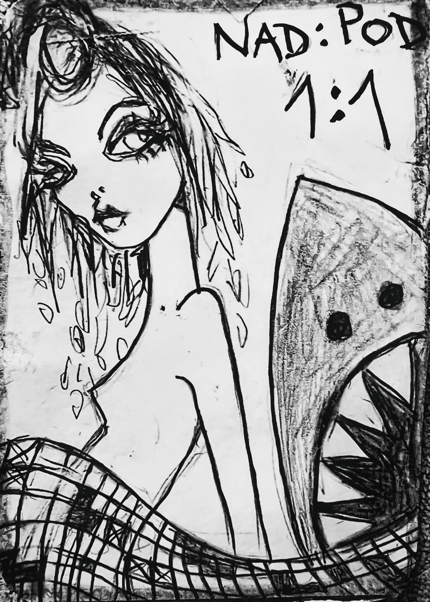

rovnováha viděného a skrytého · poměr jako princip existence · 1:1
📖 O žralokovi – který měl poměr
🦈 NAD : POD = 1 : 1

🎴 shark_illustration.jpg – žena, žralok, mřížka, text 1:1
⚖️ ROVNOVÁHA A POMĚR (balanced_shark)
🎨 VIZUÁLNÍ ANALÝZA (visual_shark)
🧠 PERSPEKTIVY (perspective_shark)
📚 KOGNITIVNÍ RÁMEC (12 perspektiv)
🔬 FORENZNÍ ANALÝZA ODPOVĚDÍ (struktura jazyka)
⚡ Po vyplnění textových polí klikněte. Analyzátor detekuje úrovně Excellent / Good / Adequate / Poor podle scoring rubrik, výhradně z jazykových markerů.